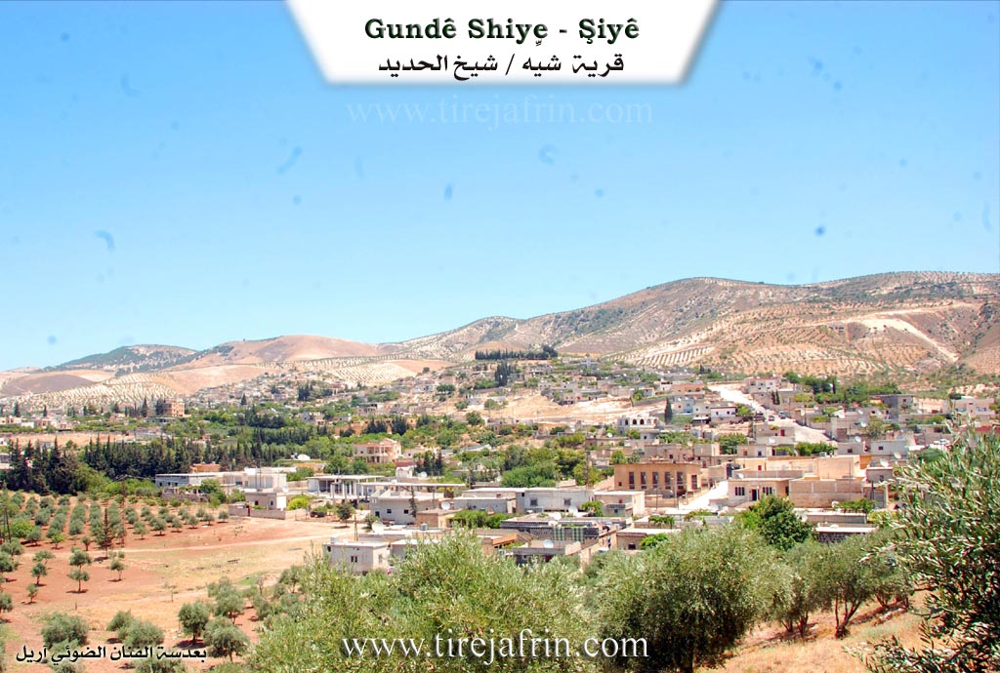
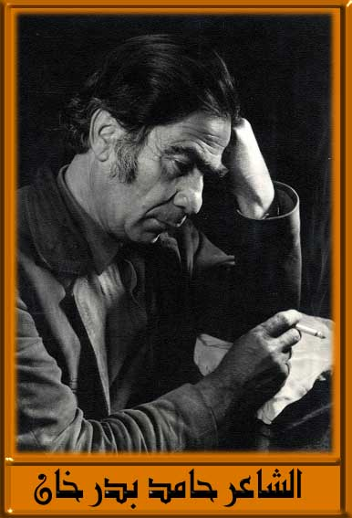
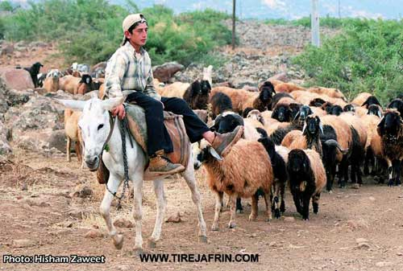
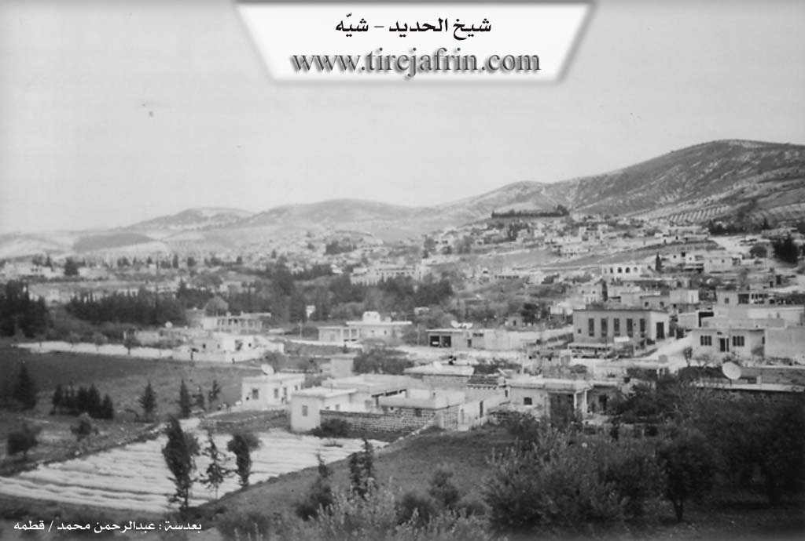

General Information
Nahiya (Subdistrict)
Şiyê
Also Known As
Pîran, Şiyê, Şêx Hadîd, Şîye, شيخ الحديد
Families, Clans, etc.
Dinkilî, Dûşar Elûş, Haco, Hebeş, Kocer, Mala Ebû Sîwar, Mala Hec Nesir, Mala Ribcî, Mala Xalê Henîf, Me'melî, Mihemedî Firîkê, Xidirê Hemo Xalê, Şêx Ismaîl Zade, Şêxo

Photos




Basic Information about Şiyê
Source: Afrin 366
Springs: Kaniya Sor
Hills: Gelî Şiyê
Shrines: Meqbera
Ruins: Amûd, Cihê ca reş
Trees: Darê Qermilq
Other Landmarks: Saha Şiyê
Summaries
I. Summary from TirejAfrin Site (English) of Şiyê
Source: https://www.tirejafrin.com/site/kura%20afrin%20shiye%20-%20shiye.htm
It is stated in the book جبل الكرد (عفرين) دراسة جغرافية Çiyayê Kurmênc (Efrîn): A Geographical Study by د. محمد عبدو علي Dr. Mihemed Ebdo Elî:
Sub district of Şiyê (Sheikh al Hadid): The Şiyê sub district is located on the western side of the administrative map of the Efrîn region, and its center is the town of Şiyê. It is followed by 18 villages and administrative divisions, two of which are deserted. The boundaries of the sub district are: Turkey to the west, the sub district of Mabeta to the east, the sub district of Reco to the north, and the sub district of Cindirês to the south.
The name is attributed to the Şiyê valley located north of the town, and Şya is a Kurdish word meaning "washing clothes and bathing," which used to take place in the waters of that valley. Its name appeared in ancient Islamic sources in the form of "Şîh al Hedîd," while the name "Şêx al Hedîd" is a modern naming for it.
Şiyê is a large town situated on the western slope of Çiyayê Ĥes Xidir. It was formed from several residential clusters: Şikaka in the south, Hac in the north, and the upper and lower villages Gundê jor and Gundê jêr. In the center of the town is an abundant water spring, around which there were many foundations of buildings, wells, old water channels, and archaeological evidence of important civil structures dating back to pre Islamic eras, which have been buried under new residential houses. The residents of the town work primarily in olive cultivation. It contains a few olive presses, workshops for repairing agricultural machinery, commercial shops, a health center, and a weekly market held on Friday. It is the birthplace of the poet Hemîd Bedirxan, who was buried there.
It is stated in the book عفرين .... نهرها وروابيها الخضراء Efrîn... Her River and Her Green Hills by the writer عبدالرحمن محمد Ebdulrehman Mihemed from the village of Qetme, Şiyê sub district: It is a sub district in Çiyayê Kurmênc, following the Efrîn region, Heleb governorate. It has become a center for the sub district since 1975 AD. The Şiyê sub district is located on the western side of the Efrîn region, directly near the Turkish border. It is bordered to the north by the Reco sub district, to the south by the Turkish border and the Cindirês sub district, to the east by the Mabeta sub district, and to the west by the Liwa Iskenderun. It consists of the town of Şiyê, 13 villages, and four farms.
The town of Şiyê: It is a town in Çiyayê Kurmênc, following the Efrîn region, Heleb governorate. It is a large town located on the northwestern slope of the aforementioned mountain, at the bottom of the western slope of a height called Çiyayê Senarê (483m). Several streams cut through it, descending towards the west. It overlooks plains covered with volcanic soil to the west. It is 40km away from the city of Efrîn towards the west. It is bordered to the north by a plain planted with olive trees, a mountainous height, and the villages of Erende, Mistkanlî, and Şêx Çeqallî. To the south, it is bordered by a fertile plain planted with olive trees and the villages of Senarê and Enqelê. To the east, it is bordered by a high mountain range planted with forest trees and the villages of Hac Hesenlî and Remezanlî. To the west, it is bordered by a wide plain planted with olive trees and fruit trees and the village of Qermitlîq.
The number of its houses is about 800, and its age is about 800 years. The reconstruction of the area is ancient, evidenced by the remains of basalt columns, engraved stones, foundations of old buildings, pottery shards, and old water channels that penetrate the town. Its dwellings were stone and mud with flat wooden roofs, but modern concrete dwellings have begun to cover them in most directions. An electricity network is available, as well as drinking water from an old water spring from the Roman era located on the northern side of the town and penetrating the center of the town. Currently, the town drinks from a water network that draws its water from an artesian well in its south and from rainwater collected in domestic ground cisterns.
It has several primary, preparatory, and secondary schools, a telephone center, a municipality established in 1979, a health center, a police center specifically for forestry, and a mosque in its center. The sub district was established in 1975, and a building was constructed for the sub district directorate. The residents work in rain fed agriculture (olives, grains, legumes, vines) on an area of 1814 hectares, and in irrigated agriculture from artesian wells (vegetables, fruit trees) on an area of 566 hectares, alongside their work in livestock breeding. A section of the residents also works in free professions. There are five olive presses in the town. It connects to the regional center by a winding paved road with the neighboring villages. A weekly market (Bazaar) is held every Friday in the center of the town.
The population of the town of Şiyê is 9558 people, and the total population of the Şiyê sub district is about 29629 people. Among its most important families are the family of Şêx Ismaîl Zade (Menan, Kemal), the house of Kocer (who came from Gûmîtê), Dûşar Elûş, the family of Haco, the Dinkilî family, the Me'melî family, the Şêxo family (Şêx Birîm), and the Hebeş family (Hebo).
Among the most important cultural figures, we mention: the late poet Hemîd Bedirxan; the engineer Mihemed Edûd, who is the first agricultural engineer in Şiyê; the teacher Mihemed Ebdo (Ke'lo); Dr. Nûrî Şêx Ismaîl Zade, a chemist holding a doctorate in chemical sciences from the University of Aleppo and currently a teacher there; Dr. Hisên Edûd, holding a doctorate in informatics from France; and Dr. Ebdullah Mihemed, holding a doctorate in economics from France and a teacher at the University of Aleppo. The writers include Hisên Hebeş and Bekir Bekir. The mukhtar of the village is Se'îd Kocer and Behcet.
Sources:
- Book: جبل الكرد (عفرين) دراسة جغرافية Çiyayê Kurmênc (Efrîn): A Geographical Study by د. محمد عبدو علي Dr. Mihemed Ebdo Elî.
- Book: عفرين .... نهرها وروابيها الخضراء Efrîn... Her River and Her Green Hills by عبدالرحمن محمد Ebdulrehman Mihemed from the village of Qetme.
- Studies of Navenda Tirej Soft / Ebdulrehman Hacî Osman.
Preparation and Execution:
- Director of the Tirej Afrin website: Ebdulrehman Hacî Osman
- 20/12/2013
II. Summary of Şiyê from Afrin 366
Source: https://www.youtube.com/watch?v=OqWAevfSNNw
The documentary narrative focuses on the social life and historical footprint of the village of Şiyê, also referred to as Şêx Hedîd, and its neighbor Qermîliq in the Afrin region. The host traverses the scenic Gelî Şiyê, a valley characterized by its natural beauty, olive groves, and fruit orchards, though he frequently notes that water sources like Kaniya Sor have dried up or are at risk. The environmental state of the village is a point of contention, with the host criticizing visitors for leaving trash at picnic sites near the springs and advising locals to protect the landscape.
The history of Şiyê is described as ancient by the local residents. During a conversation with a shopkeeper named Mihemedî Firîkê, the village and its structures are estimated to date back significantly, with the resident suggesting origins before the year 1300 or around the 1400s. He uses the term Jmêş to describe the antiquity of the site. In the courtyard of an elder, the host examines physical remnants of this history, specifically ancient stone columns identified as Amûd and a traditional basalt site known as Cihê ca reş, which was historically used by the villagers for pounding wheat and making bulgur.
The social structure is defined by several key families and their connections to the land. The host visits the local Meqbera to pay respects to the ancestors of the village. He specifically searches for the grave of Reşîtê Ribcî from Mala Ribcî but struggles to locate it among the older, unmarked stones. He does, however, identify the resting places of Xidirê Hemo Xalê and Xaltîka Zelîxê. In the neighboring village of Qermîliq, the narrative highlights Mala Xalê Henîf and Mala Ebû Sîwar, with a specific interview with Cemal Ebû Sîwar regarding the agricultural output of the village.
The documentary also captures a vibrant wedding celebration hosted by Mala Hec Nesir, specifically sending greetings to Hisênê Hec Nasir. This event brings a sense of life to the streets, contrasting with the recurring conversation about migration. Residents note that the village is quiet and that "no one is left" because the younger generation has largely migrated to Europe. The video concludes near the border landmark of Darê Qermilq, a prominent tree that defines the edge of the village territory near Qermîliq.
Transcriptions and Subtitles
| Source | Video | Subtitles | Transcript |
|---|---|---|---|
| Afrin 366 1 | Watch Video | Download SRT | View Transcript |
Foundation/Origin Information of Şiyê
It was formed from several residential clusters: Şikaka in the south, and Hacê in the north, and the upper and lower villages Gundî jor û jêr. Among its most important families are the Sheikh Ismail Zada family, Kojer family (they came from Gomaita), Doshar Alush, Hajo family, Al-Dankali family, Al-Ma'mali family, Al-Sheikho family (Sheikh Barim), and the Al-Habash family (Habo).
Source: TirejAfrin Site
Possible Village Name Meaning of Şiyê
The name is attributed to the Şiyê valley located north of the town, and Şûya is a Kurdish word meaning "washing clothes and bathing". Its name appeared in ancient Islamic sources as "Şih al-Hadid", while the designation "Sheikh al-Hadid" is a modern name for it.
Source: TirejAfrin Site
V. Links
- Tirej Afrin:
https://www.tirejafrin.com/site/kura%20afrin%20shiye%20-%20shiye.htm - Ax û Welat:
https://www.youtube.com/watch?v=vXc0G4QsvRM - Local FB page:
https://www.facebook.com/Navceyasiye - Link:
https://www.facebook.com/profile.php?id=100047337727602 - Drone:
https://www.youtube.com/watch?v=XdIXgINIPgA - Video:
https://www.youtube.com/watch?v=kbpabLbH_u0 - Link:
https://www.youtube.com/watch?v=b2mQLP1CUqU - Afrin 366:
https://www.youtube.com/watch?v=OqWAevfSNNw